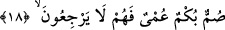

vurgulamaktır. Âyetteki “bıraktı” anlamındaki “tereke” fiili, ef’âl-i kulûb mânâsında
kullanılmıştır. “Yaptı, kıldı” anlamındadır. İşte münâfıkların dalâleti satın almak
şeklindeki garib halleri, küfür ve nifak karanlığından ibârettir. Bu sebeble gazab-ı
ilâhîye ve âhırette zulmete dûçâr olacaklardır. Oysa kıyâmet gününde: “İnanmış erkek
ve kadınları, defterleri sağdan verilmiş ve nûrları önlerinde olarak gördüğün
gün...” (el-Hadîd, 57/12) âyetinde ifâde buyrulduğu gibi mü’minlerin önü aydınlık
olacaktır.
Yine o münâfıkların; şâhid oldukları şeylerle desteklenen nûrânî ve fıtrî hidâyet
karşılığında ebedî cezânın karanlığını satın almaları, büyük bir ateş yakan ama ondan
neredeyse hiç yararlanmayan kişinin hâli gibidir. Allah onun ateşini söndürmüş ve
korkunç karanlıklar içinde bırakmıştır.
et-Teysîr ve’l-uyûn isimli eserde şu açıklama yapılmıştır: Münâfıklar dilleriyle îmân
ettiklerini söyleyerek pek çok menfaat sağlamışlar, îmânın şerefi ile şereflenmişlerdir.
Kendilerine müslüman muâmelesi yapılmış, malları, canları ve çocukları emniyette
kalmıştır. Müslüman kadınlarla evlenmişler, müslümanlara vâris olmuşlar ve onlarla
beraber ganîmetlerden pay almışlardır. Fakat ömürlerinin sonlarına doğru artık dilleri
şehâdet kelimesini söyleyemez olmuş, ebedî küfür zulmeti içinde kalmışlardır. Korku ve
karanlıklara dönmüşlerdir.
18. Onlar sağırlar, dilsizler ve körlerdir. Bu sebeble onlar geri dönemezler.
Münâfıklar Hakk’a karşı sağır olduklarından O’nu asla kabûl etmezler. Kabul
etmedikleri için de sanki işitmemiş gibidirler. “Summ”; kulak deliklerinin kapalı
olması, havanın kulak içine girip dalgalanarak ses meydana getirememesi demektir.
Onlar Hakk’ı söylememek bakımından dilsiz kesilmişlerdir. Asla onu söyleyemezler.
Çünkü gönüllerinde, ızhâr ettikleri îmânın tam zıddı olan nifak yer etmiştir. Onlar
nifâklarını gizlemişlerdir. Böyle olunca sanki hiç konuşmaya güç ve isti’dâdları yokmuş
gibi nitelenmişlerdir. “Bükm”; dilde bulunan bir kusurdur. Bu kusur sebebiyle kişi
harfleri çıkarıp kelimeleri telâffuz etmeye imkân bulamaz.
Onlar, kendilerini hidâyete götürecek ve ibret alacak nazardan, bakıştan
mahrûmdurlar. Basîreti olmayan; gözü olmayan kimse gibidir. “Umy”; kelimesi burada
hem basarın, hem basîretin yokluğu anlamında kullanılmıştır. Münâfıkların dünyâdaki
durumları böyle olduğundan âhırette de benzeri bir azâba uğratılacaklardır. Bu konuda
Allah Teâlâ hazretleri şöyle buyurmaktadır: “Kıyâmet günü onları, yüzükoyun, kör,
dilsiz ve sağır bir halde haşrederiz.” (el-İsrâ, 17/97) Kıyâmet günü münâfıklar,
Allah’ın selâmını işitemezler; Allah ile konuşamazlar ve O’nu göremezler.
Müslümanlar ise, dünyâda Hakk’ı işitip O’nu konuştukları ve O’na nazar kıldıkları için